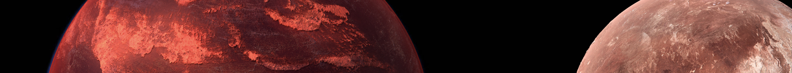
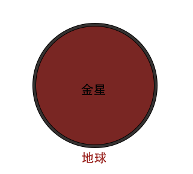
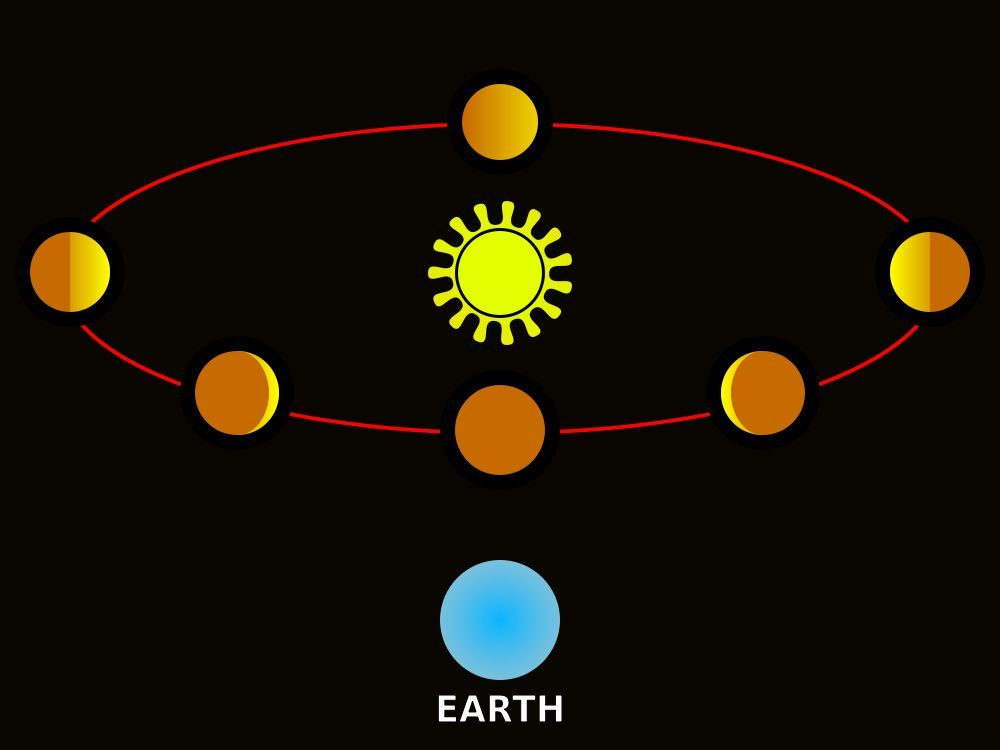

金星是太阳系中离地球最近的行星，平均距离仅为4150万千米。因此，它也成了仅次于太阳和月球的天空中第三亮的天体。
金星只要花224.7个地球日（一个地球日是24小时）就能绕太阳公转一圈。与此同时，金星的自转速度很慢，需要花243个地球日才能自转一圈。这让金星成了太阳系中极为罕见的一日（即金星日）比一年（即金星年）还要漫长的天体。


大小和距离
我们接近金星是一个视角问题。这颗行星的周围几乎和地球一样大——7，521英里（12，104公里）宽，而地球只有7，926英里（12，756公里）。金星比地球小1.1倍
金星离地球最近，距离地球约3800万英里（约6100万公里）。但大多数时候，这两颗行星相距更远：水星，最内层的行星，实际上比金星花更多的时间在地球的附近。

从地球上，金星是我们自己的月亮之后夜空中最亮的物体。因此，古人对其文化给予了高度重视，甚至认为这是两个物体：一颗晨星和一颗夜星。这就是视角的诀窍所在。金星离地球最近，距离地球约3800万英里（约6100万公里）。但大多数时候，这两颗行星相距更远：水星，最内层的行星，实际上比金星花更多的时间在地球的附近。
轨道和旋转
花一天时间在金星上将是一个相当迷失方向的体验——即如果你的船或西装能保护你免受华氏900度（475摄氏度）的温度的伤害。首先，你的"一天"将是243个地球日长-甚至比金星年长（一次绕太阳旅行），只需要225个地球天。另一方面，由于地球的旋转速度极慢，日出到日落需要117个地球日。顺便说一句，太阳将在西方升起，并设置在东部，因为金星与地球相比向后旋转。
在等待的时候，不要指望从无情的气温中得到任何季节性的缓解。在地球上，它的自旋轴倾斜了大约23度，我们体验到了夏天，当我们的地球（我们的半球）的一部分更直接地接收太阳的光线时——这是这种倾斜的结果。在冬季，倾斜意味着光线不太直接。金星没有这样的运气：它非常轻微的倾斜只有三度，这是太少，不能产生明显的季节。
在等待的时候，不要指望从无情的气温中得到任何季节性的缓解。在地球上，它的自旋轴倾斜了大约23度，我们体验到了夏天，当我们的地球（我们的半球）的一部分更直接地接收太阳的光线时——这是这种倾斜的结果。在冬季，倾斜意味着光线不太直接。金星没有这样的运气：它非常轻微的倾斜只有三度，这是太少，不能产生明显的季节。
结构和表面
如果我们能将金星和地球切成两半，一极对两极，并并排放置，它们看起来将非常相似。每个星球都有一个铁芯，被热岩地衣包围着：最薄的皮肤形成岩石，外部地壳。在这两颗行星上，这种薄薄的皮肤都会发生变化，有时会爆发成火山，以应对深层的热和压力的起伏。
在地球上，大陆在数千百万年的缓慢运动重塑了表面，这个过程被称为"板块构造"。金星在历史上的早期也发生过类似的事情。今天，这个过程的一个关键因素可能是操作：俯冲，或在另一个大陆"板块"下面滑动，这也可能触发火山。俯冲被认为是创建板块构造的第一步。
金星似乎已经完全抹去了其早期表面的大部分痕迹。原因：火山和构造力，其中可能包括地表屈曲和大规模喷发。表面特征的平均年龄可能只有1.5亿年，一些较旧的表面混合在一起。
金星是山谷和高山的风景，点缀着成千上万的火山。其表面特征——最以真实和神话女性的名字命名——包括伊什塔尔Terra，一个靠近北极的澳大利亚大小的岩石高地地区，以及一个更大的南美面积，叫做横跨赤道的阿芙罗狄蒂Terra。一座山达到36，000英尺（11公里），高于珠穆朗玛峰。值得注意的是，除了地球，金星的撞击坑是迄今为止任何岩石行星中最少的，它揭示了一个年轻的表面。
金星景观的其他显著特征包括：
"煎饼"圆顶与平坦的顶部和陡峭的两侧，宽达38英里（62公里），可能是由高度粘稠的熔岩挤压形成的。
"滴答声"圆顶，奇怪的火山与辐射刺激，从上面看，使他们看起来像他们的血液喂养同名。
Tesserae，地形与复杂的山脊和凹槽模式，表明灼热的温度使岩石在某些方面的行为更像花生酱下一个薄而强大的巧克力层在金星上。
在地球上，大陆在数千百万年的缓慢运动重塑了表面，这个过程被称为"板块构造"。金星在历史上的早期也发生过类似的事情。今天，这个过程的一个关键因素可能是操作：俯冲，或在另一个大陆"板块"下面滑动，这也可能触发火山。俯冲被认为是创建板块构造的第一步。
金星似乎已经完全抹去了其早期表面的大部分痕迹。原因：火山和构造力，其中可能包括地表屈曲和大规模喷发。表面特征的平均年龄可能只有1.5亿年，一些较旧的表面混合在一起。
金星是山谷和高山的风景，点缀着成千上万的火山。其表面特征——最以真实和神话女性的名字命名——包括伊什塔尔Terra，一个靠近北极的澳大利亚大小的岩石高地地区，以及一个更大的南美面积，叫做横跨赤道的阿芙罗狄蒂Terra。一座山达到36，000英尺（11公里），高于珠穆朗玛峰。值得注意的是，除了地球，金星的撞击坑是迄今为止任何岩石行星中最少的，它揭示了一个年轻的表面。
金星景观的其他显著特征包括：
"煎饼"圆顶与平坦的顶部和陡峭的两侧，宽达38英里（62公里），可能是由高度粘稠的熔岩挤压形成的。
"滴答声"圆顶，奇怪的火山与辐射刺激，从上面看，使他们看起来像他们的血液喂养同名。
Tesserae，地形与复杂的山脊和凹槽模式，表明灼热的温度使岩石在某些方面的行为更像花生酱下一个薄而强大的巧克力层在金星上。
大气层
星的大气层是极端的。金星表面是太阳系中最热的，除了太阳本身，它甚至比最内层的行星——烧焦的水星还要热。为了比短暂的维纳拉探测器活得更久，你漫步在金星上的短暂漫步大概包括难以想象的强绝缘，因为温度逼近华氏900度（482摄氏度）。你需要一个极其厚重的外壳，以避免被大气的重量压碎——大气层会压在你身上，就好像你在海洋深处0.6英里（1公里）一样。
大气中主要是二氧化碳——同样的气体驱动着金星和地球的温室效应——云层由硫酸组成。在表面上，热高压二氧化碳具有腐蚀性。但是，一个陌生的转变开始，你上升更高。温度和压力开始缓解。
大气中主要是二氧化碳——同样的气体驱动着金星和地球的温室效应——云层由硫酸组成。在表面上，热高压二氧化碳具有腐蚀性。但是，一个陌生的转变开始，你上升更高。温度和压力开始缓解。
磁气圈
尽管金星的大小与地球相似，铁芯大小相似，但地球本身并没有内部产生的磁场。相反，金星有所谓的诱导磁场。这种弱磁场是由太阳磁场和行星外层大气相互作用产生的。来自太阳的紫外线在金星最外层的大气层中激发气体：这些电兴奋的气体被称为离子，因此这个区域被称为电离层（地球也有电离层）。太阳风——每小时100万英里的带电粒子从太阳不断流出——携带着太阳的磁场。当太阳的磁场与金星的电兴奋电离层相互作用时，它就会产生或诱导那里的磁场。当太阳风吹过金星并向外吹入太阳系时，这个诱导磁场包围着这颗行星，形状像一个延伸的泪滴，或彗星的尾部。
金星盈亏
金星有一个相当有名的现象，叫金星盈亏。
 金星有可能跑到太阳的背后。如果金星跑到了地球和太阳之间，它就会挡住后面射来的太阳光，让我们看不到它，这就是金星的“亏”；如果它跑到太阳的背后，就可以完全地反射太阳光，让我们看到一个最圆最亮的金星，这就是金星的“盈”。
关于金星的需要了解的10件事
1、有毒双胞胎
金星通常被称为"地球的孪生体"，因为它们的大小和结构相似，但金星具有极端的表面热量和稠密的有毒大气。如果太阳和典型的前门一样高，地球和金星的大小都差不多。
2、第二岩
金星是第二接近太阳的行星，其轨道距离约为6700万英里（1.08亿公里）
3、长天，短年
金星在其轴上旋转非常缓慢——金星上的一天持续243个地球日。然而，这颗行星绕太阳运行的速度比地球快，所以在金星上一年只需要大约225个地球日，使金星的一天比一年长！
4、多样化地形
金星有一个坚实的表面覆盖着圆顶般的火山，裂缝和山脉，广阔的火山平原和广阔的，山脊高原。
5、年轻的表面
金星的平均表面不到10亿年的历史，可能只有1.5亿年的历史——从地质学角度来看，金星相对年轻。这对科学家来说是一个重大难题——他们不知道究竟发生了什么让金星完全重新浮出水面。
6、失控的温室
金星厚厚的大气层吸收热量，产生失控的温室效应——使它成为太阳系中最热的行星，表面温度足以融化铅。温室效应使金星比没有温室效应的金星热约700°F（390°C）。
7、臭云
金星永远笼罩在浓密有毒的硫酸云中，从28至43英里（45至70公里）的高度开始。云闻起来像烂鸡蛋！
8、航天器磁铁
金星是航天器探测的第一颗行星，在太空探索的早期就进行了深入的研究。金星也是第一颗由来自地球的航天器到达地表的行星。高温意味着着陆器只存活了几个小时。
9、金星上的生命
正如我们所知，金星是一个不太可能存在生命的地方，但一些科学家理论认为，微生物可能存在于云层中，云层中较冷，压力与地球表面相似。在云层中观察到磷素，这是微生物生命的可能指标。
10、向后日出
与太阳系中的大多数行星相比，金星在其轴上向后旋转。这意味着太阳在西方升起，向东落下，与我们在地球上看到的相反。
来源：《宇宙奥德赛：漫步太阳系》，王爽